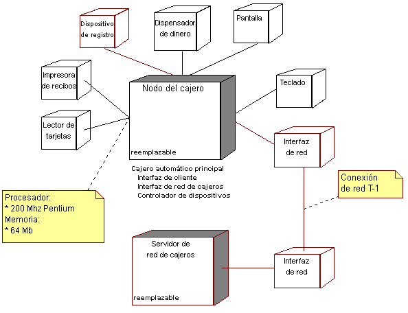

| Producto de trabajo: Modelo de despliegue |
|
 |
| Este producto de trabajo muestra la configuración de los nodos de proceso en el tiempo de ejecución, los enlaces de comunicación entre ellos, y las instancias de componente y los objetos que residen en ellas. |
|
Objetivo
-
Para capturar la configuración de los elementos de proceso y las conexiones entre elementos de proceso, en el
sistema.
|
Relaciones
| Roles | Responsable:
| Modificado por:
|
| Salida de |
|
Descripción principal
El modelo de despliegue consta de uno o más nodos (elementos de proceso con, como mínimo, un procesador, memoria
y posiblemente otros dispositivos), dispositivos (nodos estereotipados sin capacidad de proceso en el nivel
modelado de abstracción) y conectores, entre nodos, y entre nodos y dispositivos. El modelo de despliegue
también correlaciona procesos con los elementos de proceso, permitiendo la distribución de comportamiento entre
los nodos que se deben representar.
Los roles siguientes utilizan el modelo de despliegue:
-
El arquitecto de software, para capturar y comprender el entorno de ejecución física del sistema y para
comprender las cuestiones de distribución.
-
Los diseñadores (incluidos los diseñadores de software y de bases de datos), para comprender la
distribución del proceso y los datos en el sistema.
-
El administrador del sistema, para comprender el entorno físico en que se ejecuta el sistema.
-
El gestor de despliegue en la planificación de la transición del producto hacia la comunidad de
usuarios.
-
El gestor de proyectos, en la estimación de costes, para el caso de negocio, y para la planificación de la
adquisición, instalación y mantenimiento.
|
Propiedades
| Opcional |  |
| Planeado |  |
Ilustraciones
Personalización
| Opciones de representación |
Representación UML: Modelo.
Un modelo de despliegue puede tener las siguientes propiedades:
-
Introducción: Una descripción textual que sirve como breve introducción al
modelo.
-
Nodos: Elementos de proceso en el sistema. Los nodos pueden tener las siguientes propiedades:
-
Nombre
-
Una descripción que proporciona información sobre el procesador, capacidad de almacenamiento, capacidad de
memoria o cualquier otra información sobre las posibilidades del dispositivo.
-
Una lista de los procesos y hebras que se ejecutan en el procesador. Esta lista también puede enumerar los
componentes de software que se ejecutan dentro de cada proceso.
-
Una lista de las unidades de despliegue que se instalarán en el nodo.
-
Dispositivos: Dispositivos físicos, que no tienen ninguna capacidad de proceso (al nivel modelado
de abstracción), que dan soporte a los nodos de procesador. Los dispositivos pueden tener las siguientes
propiedades:
-
Nombre
-
Una descripción, que proporciona información sobre las posibilidades del
dispositivo.
-
Conectores: Conexiones entre nodos, y entre nodos y dispositivos. Los conectores pueden tener
información asociada en relación con la capacidad o ancho de banda del conector.
-
Diagramas: Los diagramas del modelo, propiedad de los paquetes.
El modelo de despliegue normalmente se representa en un diagrama como el que se muestra a continuación:

El modelo de despliegue es opcional para sistemas con un único procesador, o sistemas simples con poca o sin ningún
tipo de distribución del procesamiento.
Es obligatorio para los sistemas con configuraciones complejas de red o de procesador.
|
© Copyright IBM Corp. 1987, 2006. Reservados todos los derechos.
|
|